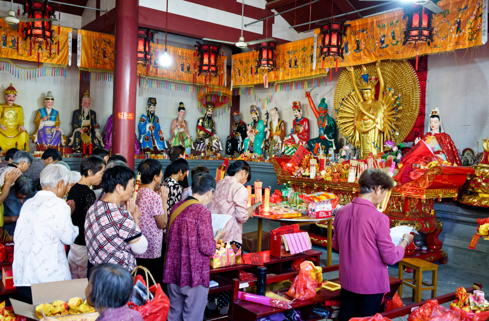
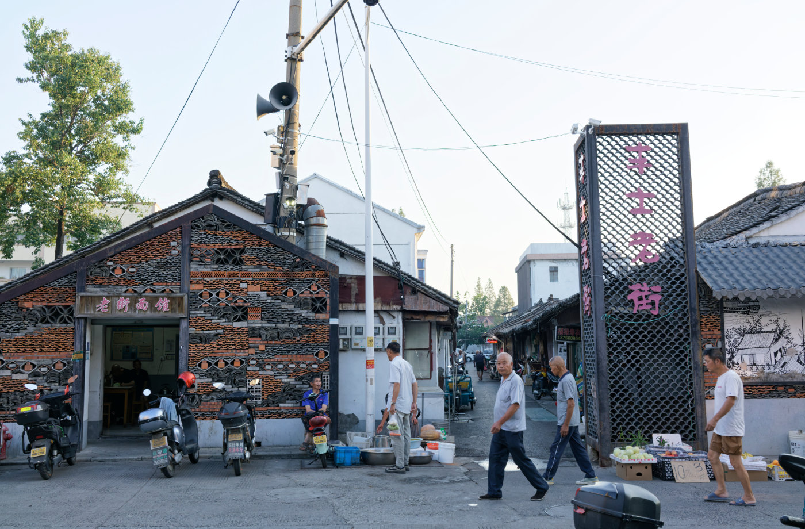
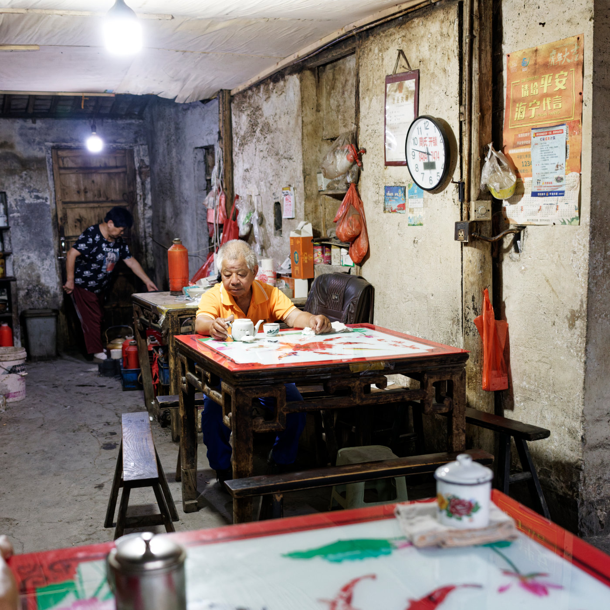

SONY DSC-RX1RM2 (RX1R II)
RX1R II 是一台轻便的全画幅 35mm 定焦相机，配上皮套、遮光罩和光学取景器后，成为一套适合日常随身拍摄的安静组合。
Personal Archive
这里保存一些照片、文字、器材折腾，以及我对日常生活的观察。摄影是入口，文字是线索，最后留下来的大概是一个人的观看方式。

RX1R II 是一台轻便的全画幅 35mm 定焦相机，配上皮套、遮光罩和光学取景器后，成为一套适合日常随身拍摄的安静组合。

农历六月十九，观音成道纪念日。拍完丰士老街，我们顺路走进丰士庙，看见一场仍在当地日常生活中延续的民间仪式。

拍完丰士村老茶馆，顺着附近的老街巷走了一段。没有刻意寻找什么，只是慢慢走、慢慢看，记录下街巷里仍然留着的日常。

一台被官网抛弃的 Spyder2Express 校色仪，在 2026 年借助 DisplayCAL 与 ArgyllCMS 重新连接到 Mac Mini 和飞利浦显示器。经过几次看似死机的漫长等待，它终于生成了 ICC 配置文件，也留下了一次老设备重获新生的校色记录。

海宁丰士村老茶馆里，斑驳墙面、木门、搪瓷缸和几位喝茶聊天的老人，组成一处仍在日常使用的旧空间。


A personal archive of photographs, notes and curiosities.